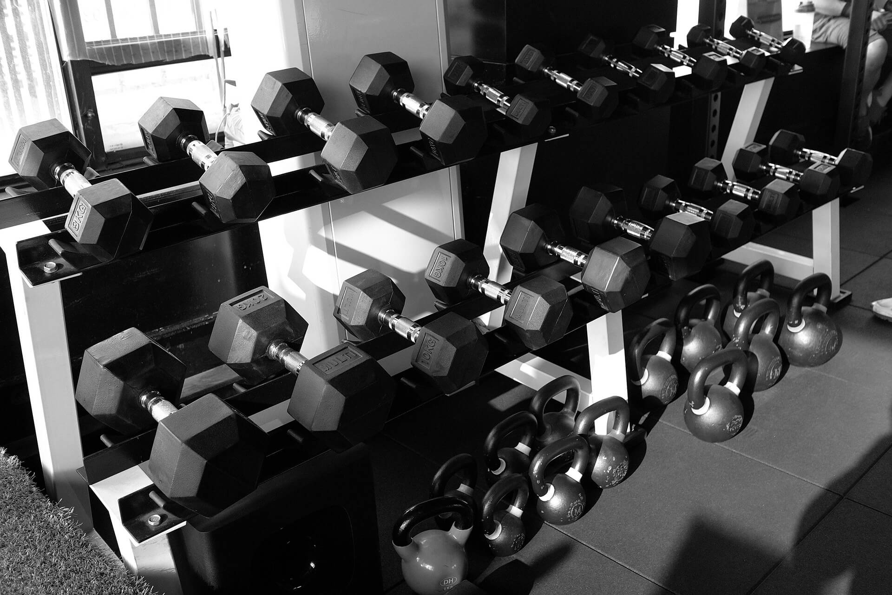
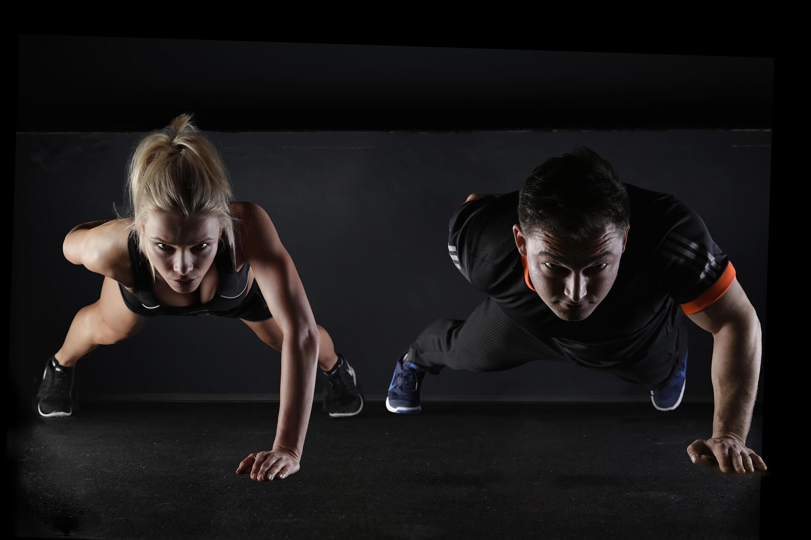
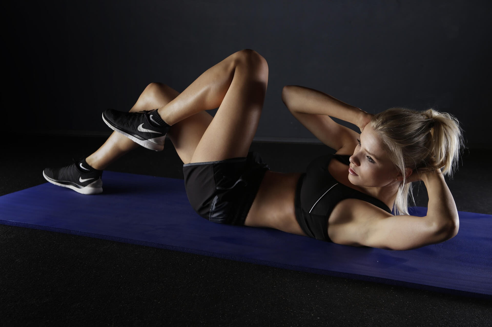

Min träning
Träning är en viktig del av mitt liv eftersom jag har tränat sedan jag var 13 år. Jag började träna när jag var yngre eftersom jag tyckte att det kunde vara tråkigt att bara vara hemma. Till en början var träningen mest något jag gjorde för att ha något att göra men med tiden blev det något som jag verkligen började älska. Idag tränar jag både på gym och med calisthenics, vilket jag tycker är väldigt roligt och coolt. Jag gillar att kunna utvecklas och märka att jag blir starkare och bättre på olika övningar eftersom det driver mig till att träna ännu mer. Träningen har också blivit en del av min vardag och något som jag tycker om att göra regelbundet. För mig handlar träning inte bara om att bygga muskler utan också om att må bra, känna mig stark och hela tiden försöka utvecklas. Därför har träningen blivit en viktig del av mitt liv.

Mina träningsformer
Mina träningsformer är baserade på mitt stora intresse för träning och den erfarenhet jag har samlat på mig under åren. När jag växte upp blev jag väldigt intresserad av att göra research om träning och lära mig mer om hur olika träningsformer fungerar. Jag har också fått mycket erfarenhet genom alla vänner och äldre personer som jag har tränat tillsammans med. Genom att träna med olika personer har jag fått se många olika sätt att träna och fått lära mig vad som fungerar bäst för mig. Idag tränar jag främst på gym och med calisthenics. Jag tycker att båda träningsformerna är roliga eftersom de ger mig möjlighet att utvecklas på olika sätt. Gymmet låter mig fokusera på styrka och olika muskelgrupper medans calisthenics handlar mer om kroppskontroll och att kunna utföra olika övningar med sin egen kroppsvikt.
Mina mål
Målet med min träning är att hålla en hälsosam livsstil, ha en välfungerande kropp och framför allt må bra. Jag vill kunna känna mig stark och ha energi i vardagen. Ett annat mål är att bygga en estetisk kropp som jag själv är nöjd med. För mig handlar träning därför både om hur kroppen fungerar och hur den ser ut. Jag vill kunna utvecklas över tid och känna att jag blir starkare och bättre på de övningar jag gör. Samtidigt tycker jag att det är viktigt att träningen inte bara handlar om utseende, utan också om att må bra både fysiskt och mentalt. Genom att träna regelbundet kan jag känna mig mer motiverad och nöjd med mig själv. Därför försöker jag se träningen som en långsiktig del av min livsstil och inte bara något jag gör under en kort period.

Min träningsrutin
Min träningsrutin är en viktig del av mitt liv som jag har arbetat på under flera år för att skapa en regelbunden vana. Genom åren har jag blivit van vid att träna ungefär sex gånger i veckan. För mig handlar det inte längre om att jag måste träna utan träningen har blivit en naturlig del av min vardag och nästan en del av vem jag är. Jag tycker om känslan av att ha en rutin och veta att jag har tid för träningen under veckan. Att träna så ofta har också gjort det lättare för mig att hålla motivationen uppe eftersom det har blivit något jag är van med. Även om jag tränar ofta försöker jag fortfarande lyssna på min kropp och ge den den återhämtning som behövs. Min träningsrutin hjälper mig därför både att hålla mig aktiv och att fortsätta utvecklas mot mina mål.
